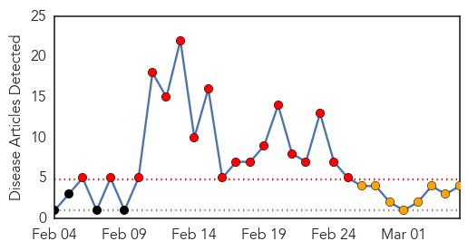
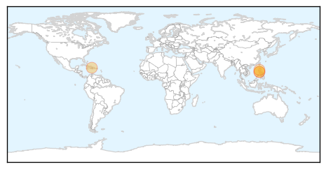
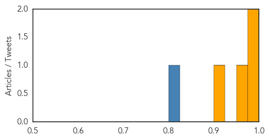
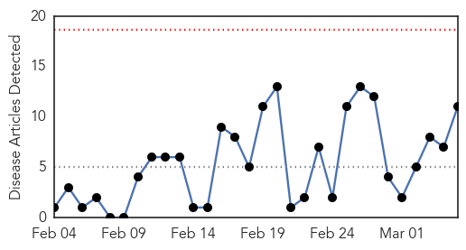

MERS
30-Day Web Trend
18 alerts, 3 warnings

30-Day Twitter Trend
12 alerts, 2 warnings

Article Locations
Article Confidences
Top Articles:
Top Tweets:
- 0.809
- RT: Preparedness to outbreak is crucial at Primary care level and EDs.. MERS-Cov coronavirus
- 0.635
- AFD Blog `Saudi MOH Adds 3 New MERS Cases, 1 Death' MERS-CoV http://t.co/hwJJQL6Q2s
Cholera
30-Day Web Trend
0 alerts, 0 warnings

30-Day Twitter Trend
4 alerts, 0 warnings

Article Locations

Article Confidences

Top Articles:
- 0.998
- 8 cholera cases recorded countrywide
- 0.997
- Mozambique cholera outbreak sickens more than 4500
- 0.995
- Cholera confirmed at SA, Zim border
- 0.994
- Cholera outbreak looms in Zimbabwe capital
- 0.992
- New cholera outbreak kills 5
- 0.992
- New cholera cases in Zimbabwe
- 0.989
- WHO intensifies support for Malawi, Mozambique following cholera outbreak - Xinhua
- 0.988
- Cholera: WHO intensifies support for Malawi
- 0.976
- WHO intensifies support for Mozambique following cholera outbreak
- 0.974
- Blue Helmets in White Uniforms: Cuba’s Doctors in Haiti
- 0.806
- Hand Washing For Healthy Living
Top Tweets:
- 0.763
- cholera confirmed at South Africa/Zimbabwe border http://t.co/VcW0Sce8Us via